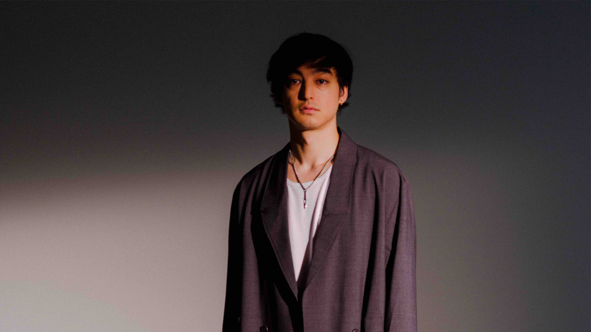

Joji

George Kusunoki Miller nació el 18 de septiembre de 1992,5 en Osaka, Japón. Asistió a una escuela internacional, la Academia Canadiense, en Kobe, Japón, donde se graduó en 2012. A los 18 años, dejó Japón y viajó a los Estados Unidos. Es de ascendencia japonesa por parte de su madre y australiana por parte de su padre. Miller intentó mantener su privacidad, como por ejemplo borrando el video "Filthy Frank Exposes Himself?", en el que se reveló como estudiante universitario en Brooklyn, Nueva York, y que no quería revelar información personal por temor a no poder conseguir un trabajo más adelante debido a la naturaleza de su programa.
